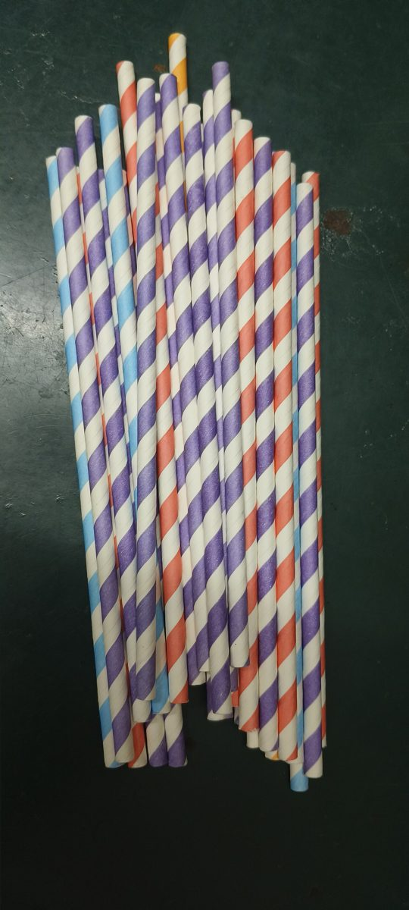
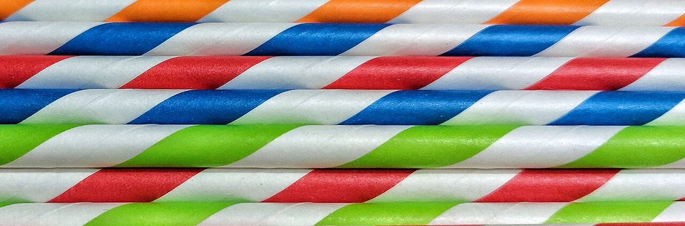
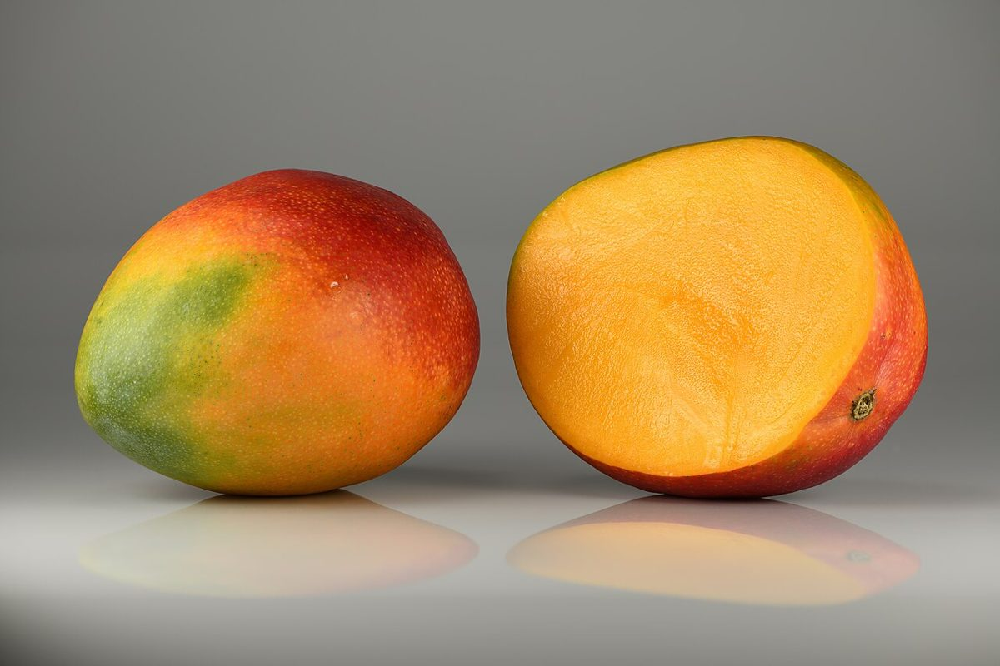
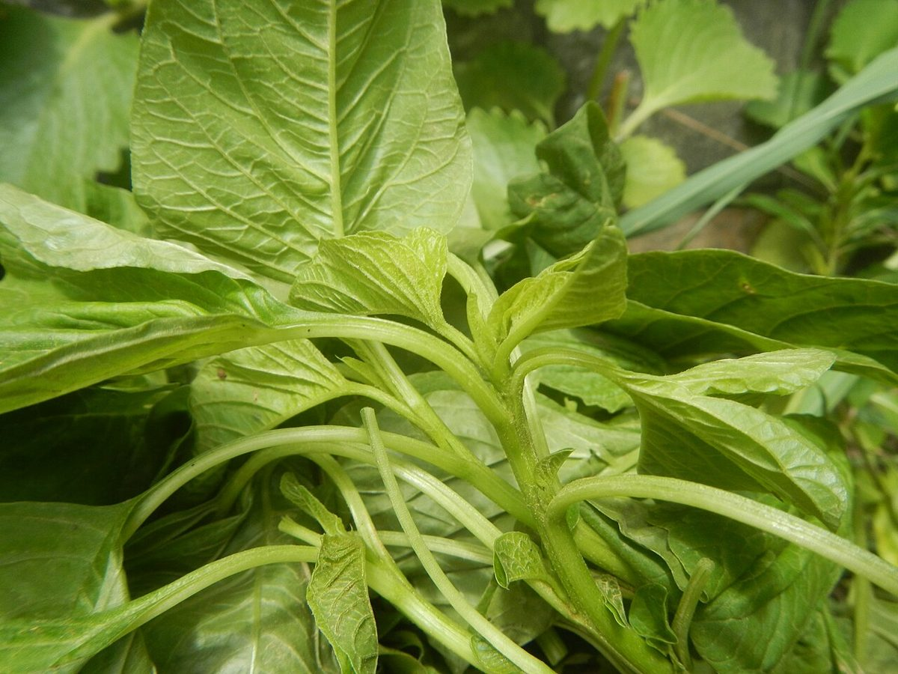

店のこと
店のこと
お店について確認できているのは、所在地とInstagramのアカウントだけです。
節 一
確認できていること
- 店名は「SALU smoothie」、業種はカフェ(スムージー)
- 所在地は千葉県館山市那古510
- 電話番号はなし。連絡はInstagramから
- 営業時間・定休日・メニュー・価格・ご予約・駐車場は準備中


節 二
想像してみる(制作側の連想)
この節は制作側が想像して書いたものです。お店の実際の様子・考え・メニューとは関係ありません。
スムージーという言葉から、制作側は果物の色と、ストローの縞を思い浮かべました。写真は、そのイメージに合わせて選んだ国外・撮影地不明の素材です。詳しいことは、Instagramで確かめてください。

